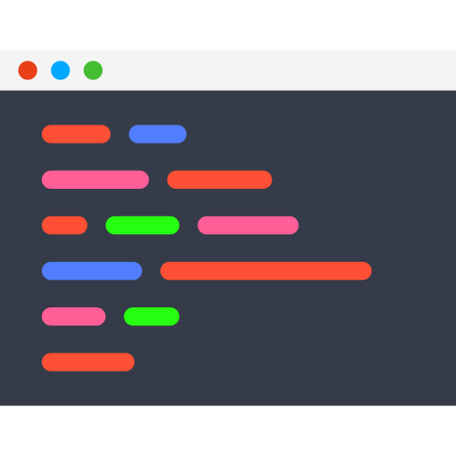

3. Claude Skills & Agent
/
Lab - Tạo một Claude Skill
Mục tiêu
- Tự tạo một Claude Skill hoàn chỉnh — changelog-generator — giúp Claude Code tự sinh file
CHANGELOG.md từ lịch sử commit Git.
- Hiểu cách viết YAML frontmatter (
name, description) sao cho Claude Code phát hiện và gọi đúng Skill khi cần.
- Biết cách kiểm tra (verify) Skill đã được Claude Code gọi đúng thay vì tự trả lời theo cách thông thường.
Kiến trúc tổng quan
flowchart LR
User(("👤
Học viên"))
Term["

Terminalclaude"]
CC["
 Claude Code
Claude Code"]
Dir["📂
.claude/skills/changelog-generator/
SKILL.md"]
Git["
Git logLịch sử commit"]
Out["📄
CHANGELOG.mdFile kết quả"]
User -->|"Gõ prompt: 'tạo changelog cho project'"| Term
Term --> CC
CC -->|"Quét & đọc description"| Dir
Dir -->|"Description khớp prompt"| CC
CC -->|"Nạp nội dung SKILL.md, thực thi quy trình"| Git
Git -->|"Danh sách commit"| CC
CC -->|"Ghi kết quả"| Out
Out -->|"Hiển thị lại"| User
Khi prompt của học viên khớp với description của Skill, Claude Code nạp toàn bộ SKILL.md, thực thi quy trình (đọc git log, phân loại commit) và ghi kết quả ra CHANGELOG.md.
Yêu cầu trước khi bắt đầu
- Claude Code CLI đã cài đặt và đăng nhập thành công (xem lại Section 2).
- Git đã được cài đặt trên máy (
git --version chạy được).
- Terminal: PowerShell hoặc Windows Terminal.
Các bước thực hành
Phần 1: Chuẩn bị project mẫu có lịch sử commit
-
Bước 1: Tạo thư mục project và khởi tạo Git
Tạo một project trống dùng để thực hành, khởi tạo Git repository cho project này.
mkdir D:\lab-claude-skill
cd D:\lab-claude-skill
git init
git config user.email "hocvien@example.com"
git config user.name "Hoc Vien"
-
Bước 2: Tạo vài commit mẫu theo quy ước prefix
Tạo một vài file giả lập và commit theo quy ước feat:, fix:, chore: — đây là dữ liệu đầu vào để Skill đọc và phân loại khi sinh changelog.
"# Expense App" | Out-File -Encoding utf8 README.md
git add README.md
git commit -m "chore: khởi tạo project"
"function addExpense() {}" | Out-File -Encoding utf8 expense.js
git add expense.js
git commit -m "feat: thêm chức năng tạo khoản chi tiêu mới"
"function validateAmount() {}" | Out-File -Encoding utf8 validate.js
git add validate.js
git commit -m "fix: sửa lỗi validate số tiền âm"
"function exportReport() {}" | Out-File -Encoding utf8 report.js
git add report.js
git commit -m "feat: Thêm chức năng xuất báo cáo chi tiêu"
Phần 2: Tạo Skill changelog-generator
-
Bước 3: Tạo thư mục Skill
Mỗi Skill nằm trong một thư mục riêng bên trong .claude/skills/. Tên thư mục nên viết liền, dùng dấu gạch ngang, mô tả đúng chức năng.
.claude\skills\changelog-generator
-
Bước 4: Viết file SKILL.md
Tạo file SKILL.md bên trong thư mục Skill vừa tạo. Có thể dùng VSCode tạo bằng tay hoặc yêu cầu Claude Code tạo giúp — nội dung mẫu đầy đủ như sau, copy toàn bộ vào file .claude\skills\changelog-generator\SKILL.md:
.claude\skills\changelog-generator\SKILL.md
Dán nội dung sau vào file rồi lưu (Ctrl+S):
.claude/skills/changelog-generator/SKILL.md---
name: changelog-generator
description: Sinh hoặc cập nhật file CHANGELOG.md từ lịch sử commit Git của project. Dùng Skill này khi người dùng yêu cầu "tạo changelog", "sinh changelog", "cập nhật changelog", hoặc "tóm tắt các thay đổi gần đây từ git log" theo định dạng phiên bản (release notes).
---
# Changelog Generator
## Quy trình thực hiện
1. Chạy `git log --pretty=format:"%s"` để lấy danh sách message của toàn bộ commit
(hoặc từ tag gần nhất nếu project đã có tag).
2. Phân loại từng commit theo prefix quy ước:
- `feat:` → nhóm **Added**
- `fix:` → nhóm **Fixed**
- `chore:`, `docs:`, `refactor:` → nhóm **Changed**
3. Sinh nội dung theo định dạng Keep a Changelog, mục mới nhất luôn ở đầu file.
4. Nếu file `CHANGELOG.md` đã tồn tại, thêm mục mới vào đầu file, giữ nguyên nội dung cũ
phía dưới. Nếu chưa tồn tại, tạo file mới.
## Định dạng output mẫu
```
## [Unreleased] - ngay-thang-nam
### Added
- Them chuc nang tao khoan chi tieu moi
- Them chuc nang xuat bao cao chi tieu
### Fixed
- Sua loi validate so tien am
### Changed
- Khoi tao project
```
Vì sao description phải viết chi tiết? Claude Code chỉ đọc phần description này khi quét Skill lúc khởi động — nó là "chìa khoá" duy nhất để quyết định có gọi Skill hay không. Description nên liệt kê rõ các cụm từ/ngữ cảnh người dùng thường dùng khi cần tác vụ đó, tương tự cách viết trong ví dụ trên.
Phần 3: Test Skill trong Claude Code
-
Bước 5: Khởi động Claude Code trong project
Vào đúng thư mục project (nơi có thư mục .claude/skills/ vừa tạo) rồi khởi động phiên làm việc.
cd D:\lab-claude-skill
claude
-
Bước 6: Gõ prompt kích hoạt Skill
Trong khung nhập lệnh của Claude Code, gõ một yêu cầu có ngữ cảnh khớp với description đã viết ở Bước 4.
Tạo changelog cho project này dựa trên lịch sử commit hiện có.
-
Bước 7: Xác nhận Skill đã được gọi đúng
Quan sát phần đầu phản hồi của Claude Code — khi một Skill được gọi, Claude Code thường hiển thị dòng thông báo dạng Skill: changelog-generator (hoặc tương đương) trước khi thực thi các bước. Đây là dấu hiệu xác nhận Skill đã được phát hiện và nạp đúng, không phải Claude tự trả lời theo cách thông thường.
Sau khi hoàn tất, kiểm tra file CHANGELOG.md vừa được sinh ra:
CHANGELOG.md
-
Bước 8 (tuỳ chọn): Kiểm chứng Skill thật sự được dùng qua /context
Có thể dùng slash command /context ngay sau khi Skill chạy xong để xem phần nội dung Skill có xuất hiện trong context đã nạp hay không, giúp xác nhận chắc chắn hơn.
/context
✅ Kết quả mong đợi
File CHANGELOG.md được sinh ra với 3 nhóm Added, Fixed, Changed tương ứng đúng với 4 commit mẫu đã tạo ở Bước 2, đúng định dạng đã khai báo trong SKILL.md.
Troubleshoot
Lỗi: Claude Code không gọi Skill, tự trả lời hoặc tự chạy git log theo cách khác không đúng định dạng mong muốn.
Nguyên nhân: Description trong SKILL.md viết quá ngắn/mơ hồ, hoặc prompt của học viên dùng từ ngữ khác quá xa so với description.
Giải pháp: Viết lại description chi tiết hơn, liệt kê thêm các cách diễn đạt khác nhau mà người dùng có thể gõ (vd thêm "sinh release notes", "tổng hợp thay đổi phiên bản mới").
Lỗi: Claude Code báo không tìm thấy Skill nào, hoặc Skill không xuất hiện.
Nguyên nhân: Thư mục Skill đặt sai vị trí (không nằm trong .claude/skills/ ở gốc project), hoặc tên file sai (phải là SKILL.md viết hoa đúng như vậy), hoặc Claude Code đã khởi động từ trước khi Skill được tạo.
Giải pháp: Kiểm tra lại đường dẫn bằng dir .claude\skills\changelog-generator, đảm bảo tên file đúng, sau đó khởi động lại phiên Claude Code (gõ /clear hoặc mở lại terminal).
Lỗi: File CHANGELOG.md sinh ra rỗng hoặc thiếu commit.
Nguyên nhân: Project chưa có commit nào (bỏ qua Bước 2), hoặc lệnh git log chạy trong thư mục không phải gốc repository.
Giải pháp: Chạy git log --oneline để kiểm tra đã có commit chưa, đảm bảo đang ở đúng thư mục project khi khởi động Claude Code.
Dọn dẹp resource
Bài lab này chỉ tạo file và thư mục trên máy local (project Git mẫu + Skill), không tạo ra resource cloud nào và không phát sinh chi phí ngoài usage theo gói cước Claude đang sử dụng. Có thể giữ lại project D:\lab-claude-skill để tiếp tục thực hành ở các bài Lab sau, hoặc xoá đi nếu không cần dùng nữa: